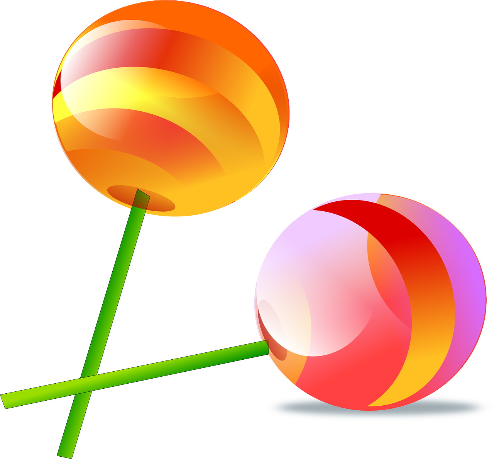

Problem
Owen went to his neighbourhood convenience store where he bought \(25\) small packages of different kinds of candy. After counting the candies in his purchase, he calculated that he had \(100\) candies in total.
If each package contained the same amount of candy, how many candies were in each package?
Owen decided to give one-fifth of the candy that evening to his brother, Clive. Owen saved the rest for another day. How many candies did he give to Clive?
The following day, his sister Charlotte bought some candy. Charlotte had a lot of sour cherries, which Owen adores. Owen had many red lollipops, which are Charlotte’s favourite candy. They decided that one lollipop was worth two sour cherries. Owen traded \(25\) of his lollipops for sour cherries. How many sour cherries did he receive from Charlotte?
After the trade, Owen eats the same amount of candy each day until his candy is finished. This takes 3 weeks. How many candies does he eat each day?
Solution
We can use skip counting by \(25\), until we get to \(100\), to determine how many candies are in each package: \(25\), \(50\), \(75\), \(100\)
It takes four steps to get to \(100\), which means that there are \(4\) candies in each package.We can calculate \(\frac{1}{5}\) of a number by dividing that number by \(5\). So Owen gave \(100 \div 5 = 20\) candies to Clive.
Since each lollipop is worth \(2\) sour cherries, and Owen traded \(25\) lollipops to Charlotte, he received \(2 \times 25 = 50\) sour cherries.
Owen had a total of \(100 - 20 = 80\) candies left after giving Clive \(20\) candies on the first night. He used \(25\) of those candies in the trade with Charlotte. This meant he had \(80 - 25 = 55\) of his original candies left. But since he got \(50\) sour cherries from Charlotte, the total number of candies he had after the trade was \(55 + 50 = 105\).
Alternatively, we see that Owen gave away \(25\) candies and he gained \(50\) candies for a net gain of \(50 - 25 = 25\) candies. Adding this to the original 80 that he had by the second day, we can see that Owen has \(80 + 25 = 105\) candies after the trade.
Since there are \(7\) days in \(1\) week, there are \(3 \times 7 = 21\) days in \(3\) weeks. We can make a table to determine how many candies he would eat in total over that time, depending on the number of candies he eats per day.
Candies Eaten per Day Total Eaten in 3 Weeks 1 21 2 42 3 63 4 84 5 105 Owen will finish the rest of the candy by eating \(5\) candies each day over \(3\) weeks.
Teacher’s Notes
Skip counting shows the connection between the mathematical operations of addition and multiplication. Finding the product of two whole numbers \(x\) and \(y\) can be defined as either “adding \(x\) to itself \(y\) times” or “adding \(y\) to itself \(x\) times”.
Skip counting is a good way to introduce multiplication. However, as the numbers get larger, or we start working with fractions or negative numbers, it can be more practical to use established algorithms to multiply numbers together. There are a variety of techniques people use such as the grid method or the lattice method.
A very common algorithm used to find the product of \(x \times y\) is to multiply \(x\) by each digit of \(y\), and append zeros to the ends of the products as you work on the digits of \(y\) from right to left. Then you need to add each digit’s product together.
This last method can be easily implemented in a computer to complete the multiplication. In some ways, it is easier for a computer because it works on binary numbers, which only have ones and zeros. Multiplying a number by \(1\) is the same a making a copy of the number, and multiplying a number by \(0\) is always \(0\). The computer can use an operation called a bitshift that will manage the process of appending zeros to the end of each digit’s product.